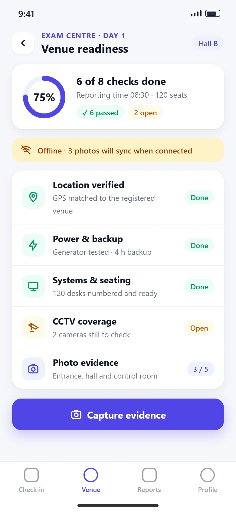
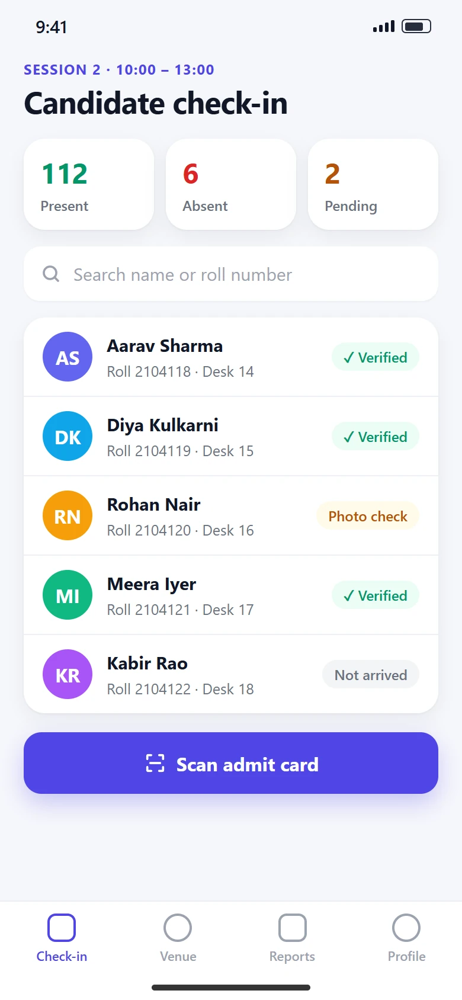

01Test Administration Software
Field work doesn't wait for a signal.
Used to administer tests at some of India's top universities. Venue readiness, evidence capture, and reporting in one workflow for an assessment provider operating across thousands of locations.
- Mobile + dashboard
- Offline sync
- Location capture
Capture now. Sync when connected.Keep records and media available when the network is not.
Inside the project
The challenge
Replace slow, error-prone venue readiness checks and give the head office a timely view of examination operations across distributed locations.
What we delivered
An app for field teams to capture evidence on site, paired with an admin dashboard for progress reporting and follow-up.
- Guided forms and checklists with text, choice-based questions, photos, video, and file uploads.
- Location capture and geotagged evidence to associate each submission with its venue.
- QR and barcode scanning, plus fingerprint capture and verification through a connected scanner.
- Offline storage of records and media, synchronization when online, and post-exam reporting.
Explore the experience




Illustrative screens · select one to enlarge